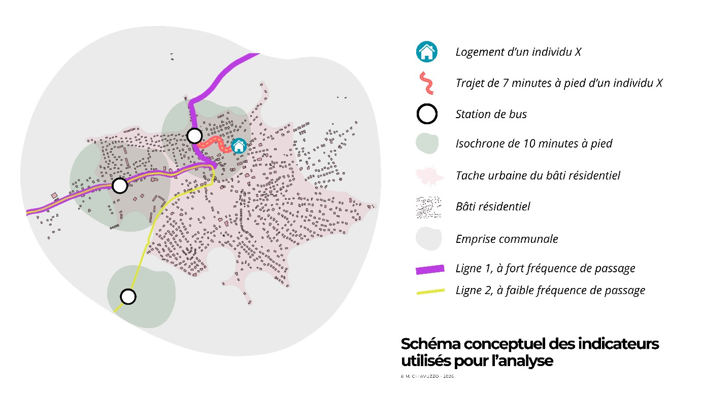
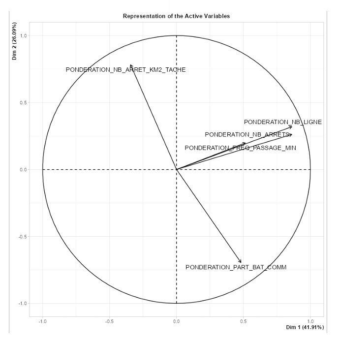
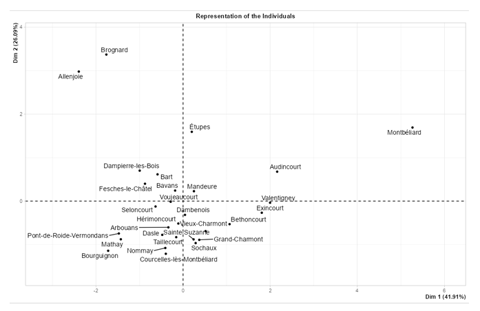

Variables d’accessibilité : critères de sélection et cadre d’analyse
Pour mener l’analyse présentée, nous avons mobilisé cinq variables, considérées comme des indicateurs clés de l’accessibilité au réseau à l’échelle communale. Selon nous, ces indicateurs sont fondamentaux pour apprécier de manière objective le niveau de desserte et la facilité d’accès au transport en commun pour les habitants.
Les cinq variables d’études sélectionnées pour déterminer l’accessibilité des communes au réseau sont les suivantes :
- Le nombre de ligne(s) par commune
- Le nombre de station(s) de bus par commune
- La densité d'arrêts rapportée à la tache urbaine résidentielle
- La part de bâtiments résidentiels (par commune) située dans des isochrones de 10 minutes à pied depuis les stations de bus
- La fréquence minimale de passage d’un bus en semaine
Afin de mieux expliciter leur pertinence et de montrer en quoi ils constituent des témoins significatifs de l’accessibilité, nous avons synthétisé les principales informations dans le schéma ci-dessous. Celui-ci permet de visualiser les liens entre les variables retenues et la notion globale d’accessibilité au réseau.

Comme le présente ce schéma, les différentes variables mobilisées sont étroitement interconnectées et influencent directement l’usage du réseau. Elles conditionnent ainsi l’accès effectif au territoire par les usagers, reflétant la manière dont la desserte et les infrastructures facilitent ou limitent la mobilité.
Dans cet exemple, l’individu X peut accéder en moins de 10 minutes à une seule ligne (L1), mais celle-ci bénéficie d’une fréquence de passage élevée. D’autres individus, en revanche, ont accès à deux lignes, ou à la ligne 2, qui présente une fréquence plus faible. En combinant et en analysant le profil global de chaque commune, il devient possible d’évaluer la manière dont les habitants disposent d’un accès au réseau, en tenant compte à la fois de la proximité des lignes et de leur fréquence de desserte.
Création des variables composantes de l’analyse
1. L'accès au réseau par la diversité de l'offre : Le nombre de ligne(s) par commune
Nous considérons que le nombre de lignes passantes et effectuant au moins un arrêt dans une commune est un marqueur essentiel d’intégration et de connexion à un réseau. Cet indicateur ne mesure pas seulement une présence technique, mais reflète la connectivité de la commune vers le reste de l'agglomération par la ou les lignes. Plus le nombre de lignes est élevé, plus les destinations accessibles sans correspondance sont diversifiées, ce qui renforce ainsi l’accès au réseau global de la commune.
Afin de déterminer le nombre de lignes traversant les différentes communes du territoire, nous avons réalisé une intersection spatiale sur SIG entre la couche des lignes de bus et celle des limites communales. Cette opération a permis d’identifier, pour chaque commune, les tronçons de lignes présentes dans son périmètre. À partir de la table attributaire issue de cette intersection, un tableau croisé dynamique a ensuite été élaboré afin de comptabiliser le nombre de lignes par commune.
2. Le volume de l'offre : Le nombre de station(s) de bus par commune
Le nombre total de stations de bus situé dans le périmètre de chaque commune, est un indicateur qui constitue une mesure brute de la capacité du réseau : plus une commune dispose d'arrêts, plus le maillage spatial est théoriquement fin, et plus l’accès au réseau par les population est simple/rapide. Cette donnée est fondamentale car elle représente le premier niveau de service offert, elle indique la multiplication des points d'entrée possibles vers le réseau de transport, indépendamment de la fréquence ou de la destination.
La méthode utilisée pour le calcul de cet indicateur est semblable à celle présentée précédemment, nous avons réalisé une intersection spatiale entre la couche des arrêts de bus et celle des communes. Puis via un tableau croisé dynamique, nous avons pu comptabiliser le nombre de lignes par commune.
3. La densité d'arrêts rapportée à la tache urbaine du bâti résidentiel
Dans un territoire rural comme celui du Pays de Montbéliard Agglomération (PMA), un calcul de densité brut à la superficie totale serait biaisé par les zones forestières ou agricoles non habitées. Pour pallier ce biais, nous avons choisi de rapporter le nombre d’arrêts à la tache urbaine de chaque commune. En calculant le nombre d'arrêts par kilomètre carré urbanisé, nous obtenons un indicateur fidèle de la proximité réelle du service là où se concentre la population, évitant ainsi de pénaliser les communes vastes mais peu denses.
Pour la mise en place de cet indicateur, nous avons d’abord procédé à une sélection par expression au sein de la couche du bâti, afin de ne conserver que les bâtiments dont l’attribut USAGE1 correspond à un usage résidentiel. Cette étape a permis de restreindre l’analyse aux seules constructions dédiées à l’habitat.
À partir de cette sélection, nous avons pu calculer la tache urbaine résidentielle pour chacune des communes du territoire. La méthode repose sur la création d’une première zone tampon de 100 mètres autour des bâtiments sélectionnés. Les polygones obtenus ont ensuite été fusionnés afin de former une tache continue. Dans un second temps, une zone tampon négative de –90 mètres a été appliquée à cette enveloppe. Ce procédé permet d’obtenir une tache urbaine résidentielle consolidée avec un seuil de continuité de 10 mètres. Enfin, un traitement complémentaire a été réalisé afin d’isoler les polygones discontinus et d’en calculer la surface, permettant ainsi d’analyser précisément la répartition spatiale de l’urbanisation résidentielle.
Enfin, nous avons réalisé une intersection spatiale entre cette couche et celle des communes, puis via un tableau croisé dynamique, nous avons pu calculer la surface totale de la tache urbaine résidentielle dans chacune des communes.
4. La proximité piétonne aux arrêts : Isochrones de 10 minutes à pied depuis les stations de bus, pour identifier le nombre de bâtiments impliqués
L’accessibilité se définit également, par la capacité de l'usager à rejoindre le réseau à pied. D’après de nombreuses études, les individus sont prêts à marcher environ 10 minutes maximum pour rejoindre un arrêt (Lenormand, 2024 ; Richer et al. , 2016). Dans un rapport de Juin 2024 l’UFC-Que Choisir explicite cette borne de la manière suivante : « Pour mesurer l'accès aux transports, nous avons retenu le critère de 10 minutes à pied. Ce délai de 10 minutes (soit environ 800 mètres pour un adulte) est considéré par les experts en géographie urbaine comme la distance maximale acceptable pour qu'un usager intègre le transport en commun dans son quotidien sans que cela soit perçu comme une contrainte majeure. »
Ainsi, nous pouvons calculer la zone couverte depuis une station de bus en 10 minutes à pied, par le réseau viaire. Cette méthode permet de quantifier l'efficacité de captation de la zone en dénombrant le nombre de bâtiments situés à l'intérieur de ces périmètres. Cet indicateur est crucial : il permet de vérifier si le réseau "capte" réellement le bâti existant ou s'il se contente de traverser le territoire sans desservir les zones résidentielles.
Cet indicateur a été construit sur la base du calcul d’isochrone de 10 minutes à pied depuis les arrêts de bus du réseau. Pour le calcul des isochrones, nous avons utilisé l’extension QGIS isochrone_ng, qui se base sur le réseau de la BDTopo-Valhalla. Cette extension est développée par l’IGN.
A partir de cette couche et celle des bâtiments résidentiels, nous avons pu réaliser une intersection spatiale, afin d’identifier le nombre de bâtiments dans ces zones.
Comme pour les autres indicateurs, à partir de cette couche, nous avons réalisé une intersection spatiale avec la couche des communes, afin d’avoir une valeur à l’échelle communale.
5. La fréquence minimale de passage
Enfin, l'accessibilité est indissociable de la dimension temporelle, représentée ici par la fréquence de passage d’une ligne (en horaire de semaine). Une commune peut être géographiquement proche d'un arrêt, mais virtuellement enclavée si les passages sont trop rares. Pour les communes bénéficiant de plusieurs lignes, nous avons retenu l'intervalle de passage le plus court. Ce choix méthodologique permet d'identifier le "meilleur niveau de service" offert à l'habitant, considérant que l'usager privilégiera naturellement la ligne la plus performante pour ses déplacements quotidiens, si possible.
Afin d’obtenir cette information pour chacune des communes, nous avons directement extrait l’information sur le site internet du réseau évolitY, par la consultation des horaires. La fréquence de passage utilisée dans cette analyse est celle des horaires du lundi au samedi.
Traitements statistiques par ACP : construction d’un indicateur d’accessibilité globale
1. Préparation des données pour l’ACP
L’objectif de cet indicateur est de combiner les différentes variables d’accessibilité en une seule. L’objectif est de construire cet indicateur tout en ne perdant pas d’informations sur les différentes variables qui le compose. Pour cela nous avons mis en place une ACP. En effet, l’analyse en composantes principales (ACP) est une méthode statistique appartenant à la famille des analyses multivariées, permettant de synthétiser les relations entre plusieurs variables différentes (Géoconfluences, 2023).
Toutefois, en l’état, les variables étant brutes, la comparaison des indicateurs ne serait pas possible. Au vu de valeurs extrêmes, de communes à morphologies différentes, ou encore étant exprimées par des unités non comparables, nous devons palier à ces limites. Pour cela, nous avons pondéré chacune des variables / indicateurs. Cette méthode permet de comparer plus facilement les communes, avec des valeurs allant de 0 (le plus faible) à 1 (le plus fort). Ainsi, l’ACP sera effectuée sur les variables pondérées. Chacune des variables a été pondérée de la manières suivante :

2. Résultats de l’ACP
L’analyse montre que les deux premiers axes expliquent 68 % de la variance totale des données (41,9 % pour l’axe 1 et 26,1 % pour l’axe 2). Cette proportion relativement élevée permet une interprétation pertinente de la structure des données dans le plan factoriel.
L’axe 1 est corrélé positivement avec les variables nombre de lignes, nombre d’arrêts et fréquence de passage minimale, ce qui traduit un niveau d’offre de transport plus élevé. Les communes situées à droite du plan factoriel, comme Montbéliard, Audincourt ou Valentigney, se caractérisent par une meilleure desserte en transports en commun.
L’axe 2 oppose la densité d’arrêts rapportée à la surface de la tache urbaine résidentielle (nombre d’arrêts par km²) à la part de bâtiments résidentiels. Cet axe semble traduire une différence entre densité de desserte et structure fonctionnelle du territoire.
La représentation des individus met en évidence une opposition entre les communes centrales ou bien desservies et les communes périphériques. Certaines communes, comme Montbéliard, apparaissent nettement isolées sur l’axe 1, ce qui confirme leur rôle de pôle majeur dans l’organisation du réseau de transport. À l’inverse, plusieurs communes se regroupent autour de l’origine du graphique, indiquant des caractéristiques intermédiaires ou relativement similaires en matière d’offre de transport.


L’ACP met en évidence une structure entre les indicateurs, les deux premiers axes expliquant 68 % de la variance totale. Cette part de variance étant significative, l’indicateur global peut être calculé à partir des coordonnées des individus sur le plan factoriel défini par les deux premières dimensions. Toutefois, dans un souci de ne pas exacerber l’influence de certaines variables et de ne pas perdre d’informations pour autant, nous avons créé cet indicateur en donnant un poids aux deux dimensions. Ce poids est défini selon la variance expliquée par la dimension à laquelle le poids sera appliqué (soit sa contribution dans l’explication). L’indicateur global se calcul selon cette formule :